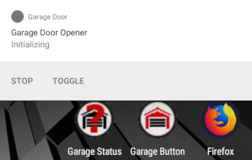
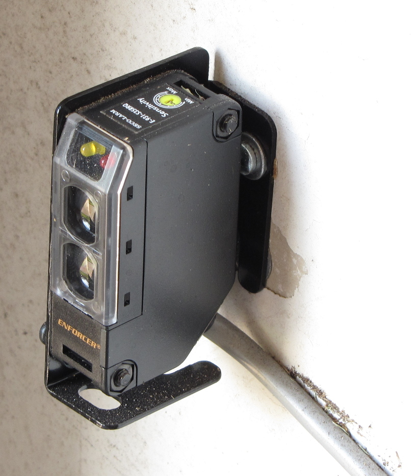
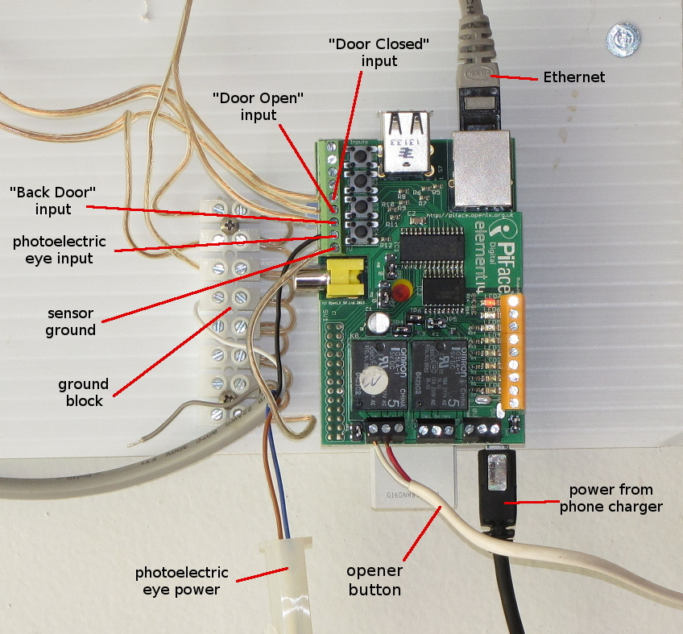
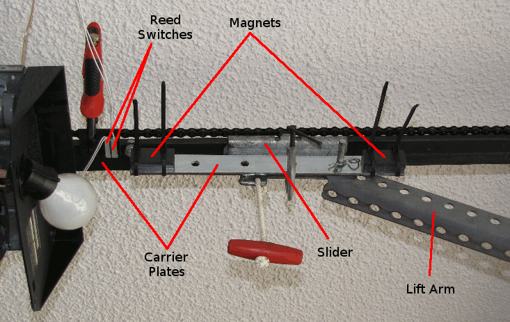

I ride a motorcycle, and garage door remotes don't last very long out in the elements, even if you can find a good place to mount one on your bike and you're willing to put up with the hassle. There's a device you can connect to your high-beam switch called a "Flash2Pass", but I had lots of issues with mine.
I developed a system to open the door "hands-off" as I rode up, and to automatically close it behind me. It also closes it behind me when I leave.
It uses a Raspberry Pi with the PiFace Digital I/O board. The Pi is attached to the internet. It uses SSL mutual authentication to control who can open the door, and keep hackers out. Only the Android app with the properly signed certificate can do it. I can deploy the app and certificate to multiple phones.
The user starts the app either via the normal method, or by pressing a Bluetooth button. I have a Satechi "Home" button mounted on the side of my helmet with a 3D-printed carrier that I designed. (Originally, I wanted to be able to put a Bluetooth Low Energy beacon on the bike, and the app would see it and start up when I got on, but none of the BLE beacons I tried were reliable. I also tried an NFC tag on my helmet, but unlocking and tapping the phone on the helmet proved tedious.)
One note about the button: It's an Android "Home" button emulating a 1-button keyboard, and I'm not able to do much with this button. I can only tell if it connects.
Another note about Bluetooth buttons: A lot of the cheap Chinese crap actually had to be turned on, before they could be used. This is pretty much useless. The Satechi product just needs to be clicked, and it wakes up and communicates with the phone.
Of course, my phone is rooted so it can turn on/off the GPS & cell data as needed. This also has the advantage of conserving battery by turning these off when I get home.
It presents an Android notification with information on the current state of the app. This has a button to stop the app, and another button to toggle closing the door afterwards.
Obviously the garage door needs to be secure. You need to keep people from "sniffing" the protocol and otherwise hacking things to gain entry.
It's protected by SSL mutual authentication, where the phone and the server each present a certificate to the other to prove it's authorized. This turned out to be the hardest part of the project.
I generate two certificates (one for the server and one for the phone) and corresponding private keys. You can install the app and certificates on multiple phones so they all have access. These certificate act as digital keys.
There's two pieces of code. One is the Android app. The source is an Android Studio project published in my GitHub repository.
Installing this app creates several application icons:
| The main application. Tap this icon to start monitoring the GPS. | |
| Screen to set up various user preferences. | |
| Show the status of the garage door, the beam sensor, and the back door. I can also open and close the door from this screen, and "arm" it so that it will close the door after the beam is broken. |
The other is a server written in Java, running on the Raspberry Pi. The source is a NetBeans project published in my GitHub repository.
It understands several one-line commands:
ARM - If the garage door is open, start waiting for the beam to be broken.
CLOSE - If the garage door is open, close it.
OPEN - If the garage door is closed, open it.
OPENCLOSE - Open the garage door, and start waiting for the beam to be broken.
PING - Do nothing.
TOGGLE - Press the garage door button.
STATUS - Report status of garage door, back door, beam sensor, and if it's armed waiting for a beam break, in a line of the form "STATUS CLOSED CLOSED CLEAR DISARMED". These lines are emitted every 30 seconds or when a status changes.
I'm running Raspian Lite since I don't need any sort of GUI, and I just ssh in to manage it. I disabled systemd and use a SysV-style init script to start the server at boot.
I assigned the Raspberry Pi a reserved DHCP address so it would stay at the same IP and a port could be forwarded to it.
I opened a port in the firewall for external access and forwarded them to the Raspberry Pi's address. This lets the phone connect over the internet.
I had to determine the external (i.e. "WAN") IP address of my firewall, which is the address entered in the setup screen. The world sees my firewall at this IP, so this is the address to which the phone needs to connect.

Sensing when you enter/exit the garageI use a Seco-Alarm E-931-S35RRQ beam-break sensor to detect when you enter and exit the garage. It's mounted just inside the door on its own bracket, with the reflector mounted across the garage. The sensor is weatherproof, smaller than a pack of cigarettes, and takes just about any source of power, AC or DC, from 12 volts to 240 volts. I use an old orphaned wall wart. It has a relay output, which you can hear click when you obstruct the beam. The status LED is amber for "clear" and red for "obstructed" and the sensitivity is adjustable. This is connected to a digital PiFace input. |
There are a ton of sensors wired up, and each one has the sense wire and a ground wire. There's only one ground connection on the PiFace Digital board, so I used a ground block to manage things. This is just a terminal block where all the terminals are connected together.
One of the relays on the PiFace board is connected to the opener simulating a button. This is what actually opens and closes the door.
The Pi is mounted on standoffs on a piece of corrugated plastic, which is fastened to the wall. Now that I have a 3D printer, I should print an enclosure and upgrade to twisted-pair wire for RFI rejection.
There are two reed switches, rather crudely mounted on a plastic plate, one at each end of the opener rail. I added magnets to the rail slider to trigger these switches. This is how the Pi tells if the door is open or closed.
Note in the picture that there's an extra set of reed switches. These are used by the garage door motor itself to tell when it's reached the end of its travel and should stop running. The original mechanism it used failed long ago, and was the original impetus for this project.
I also have a reed switch & magnet on the back door to the garage, so I can tell remotely if it's closed or not, in the status app.
It doesn't work. I tried all the tutorials and none of them ever triggered. Also, by doing my own code, I can control the GPS update rate and power consumption, and ensure that it's closely monitoring things when I'm near home, so the door opens promptly, and I'm not sitting there waiting for the phone to notice I'm home.